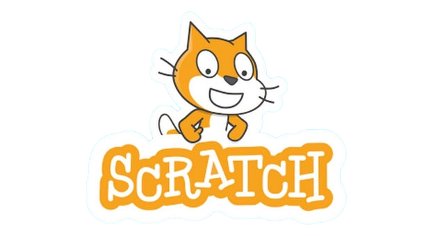

Curriculum Vitae
Nome: Maria Aurora
Cognome: Sarracino
Età: 17 anni
Città: Marano di Napoli
Email: sarracinomariaaurora@gmail.com
Profilo Personale
Studentessa al quarto anno di liceo scientifico, indirizzo scienze applicate.
Interessata alle discipline scientifiche, in particolare informatica, matematica,
fisica e scienze. Motivata ad approfondire competenze logiche e tecnologiche.
Formazione
-
Liceo Scientifico – Scienze Applicate
2022 – in corso
-
Scuola Secondaria di Primo Grado
2019 – 2022
Competenze Tecniche
Programmazione (Python, C++, HTML, Scratch)
Uso consapevole dell’Intelligenza Artificiale
Competenze Personali
- Lavoro di gruppo
- Organizzazione e gestione del tempo
- Autonomia nello studio
- Problem solving
- Precisione e responsabilità
- Curiosità e voglia di imparare
Esperienze e Progetti
Esperienze
- Gestione di contenuti digitali online
- Pianificazione autonoma del lavoro
- Sviluppo di competenze digitali e logiche
Progetti
-
I miei progetti Scratch:

-
Documentario: Divario di Genere
Corsi, Certificazioni e PCTO
- Progetto ORIZZONTI: Iniziativa di orientamento universitario che accompagna gli studenti delle superiori nella scelta del percorso terziario, aiutandoli a riconoscere attitudini e talenti attraverso moduli formativi che collegano interessi personali alle sfide sociali e scientifiche.
- Extremophiles Lab: Progetto scientifico laboratoriale.
- Cambridge English: Certificazione Linguistica Cambridge B2 First (FCE).
- Corso Sicurezza sul Lavoro: Percorso e-learning gratuito e obbligatorio per studenti di superiori, articolato in 7 moduli con video, giochi e test, che fornisce un credito formativo permanente e valida per l'ammissione agli Esami di Stato, rilasciando un attestato una volta superato il test finale.
- Corso Rischio Chimico Biologico : Formazione mirata sulla gestione dei rischi chimici e biologici in ambito lavorativo, in linea con gli Accordi Stato-Regioni.
Lingue
- Italiano: Madrelingua.
- Inglese: Livello B2-Utente autonomo, capacità di comunicazione fluida e gestione di conversazioni complesse, anche su temi astratti.